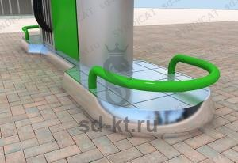

Дуга безопасности сталь3 (тип 4)
Артикул: 0477
Производственное объединение "ПНСК"
Раздел: Эксплуатационное · АЗС
Цена и наличие — по запросу. Поставляем оригинал и аналоги. Доставка по России.
Описание
Дуга безопасности сталь3 (тип 4) производства Производственное объединение "ПНСК" — позиция из раздела «Эксплуатационное» для АЗС. Компания SYNDICAT поставляет оборудование и комплектующие для автозаправочных и газозаправочных станций по всей России. Цена и наличие «Дуга безопасности сталь3 (тип 4)» — по запросу: оставьте заявку или позвоните, подберём оригинал или аналог и рассчитаем доставку.